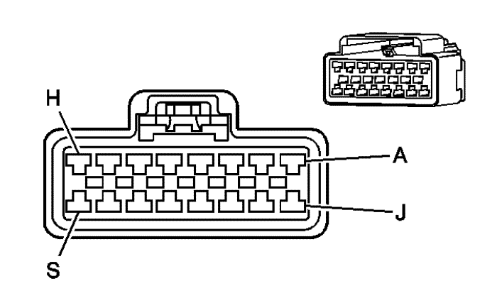

Captiva |
||||||||
|
|
|
|||||||
|
 |
Información de parte de conector
| Información de parte de terminal
|
Bulón | Tamaño | Color | Circuito | Función | Opción |
|---|---|---|---|---|---|
B1 | 0.3 | WH/BK | 910 | -- | -- |
B2 | 0.3 | D-GN/WH | 762 | Señal requerida del A/A | -- |
B3 | 0,5 | GY | 778 | Control del motor del soplador auxiliar | -- |
B4 | 0.3 | L-BU | 292 | Señal del interruptor del desempañador trasero | -- |
B5 | 0.3 | TN | 683 | Tensión de alimentación del indicador del desempañador trasero | -- |
B6 | 0,5 | WH | 119 | Control del modo de puerta | -- |
B7 | 0,5 | TN | 2273 | Control del modo de puerta | -- |
B8 | 0,5 | TN | 707 | Tensión de alimentación de la bobina del relé de RAP | -- |
B9 | 0,5 | OG | 708 | Señal de posición de la puerta de modo | -- |
B10 | 0,5 | L-BU | 409 | Tensión de alimentación del motor del ventilador de refrigeración (1) | -- |
B11 | 0,5 | RD/WH | 1840 | Voltaje positivo de batería | -- |
B12 | -- | -- | -- | No se utiliza | -- |
B13 | 0,5 | BN | 41 | Tensión 3 de encendido, marcha | -- |
B14 | -- | -- | -- | No se utiliza | -- |
B15 | 0,5 | YE | 1491 | Control de la luz trasera | -- |
B16 | 0,5 | D-BU | 1199 | Control de la puerta de temperatura de aire | -- |
B17 | -- | BK | -- | Toma de tierra | -- |
B18 | 0,5 | L-GN | 2210 | Control de la puerta de temperatura de aire | -- |
B19 | 0,5 | L-GN/BK | 1647 | Control de la puerta de recirculación de apertura | -- |
B20 | 0,5 | PK/WH | 1648 | Control de la puerta de recirculación de cierre | -- |
B21 | 0,5 | L-BU | 706 | Control de válvula magnética del modo de recirculación | -- |
B22 | 0,5 | PU | 722 | Señal del sensor de posición de la válvula de modo A/I | -- |
B23 | 0,5 | TN | 408 | Retardo del control del calado de la distribución del control de encendido | -- |
| © Copyright Chevrolet Europe. All rights reserved |